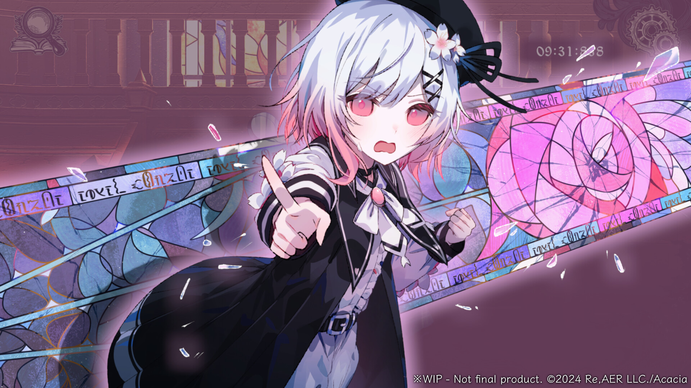

私の趣味はゲームです。数えきれないほどの作品を遊んできましたが、 ここ最近で一番心を揺さぶられたのが『魔法少女ノ魔女裁判』、通称「まのさば」です。 正直に言います。このページはこの作品を布教するために作りました。
舞台は絶海の孤島に建つ「牢屋敷」。目を覚ますと閉じ込められていたのは、 魔法の才能を持つ13人の少女たち。主人公・桜羽エマとなって、 牢屋敷で起きる殺人事件の真相を追い、少女たちの中に潜む「魔女」を議論で暴き出していく―― それが「魔女裁判」です。
🔥 魔法がトリックになる！ 少女たちはそれぞれ固有の魔法を持っていて、それが事件の仕掛けに絡んできます。 「この魔法なら、あの犯行は可能なのか？」と考え始めた瞬間、もう頭が止まりません。
🔥 議論が、本気で、ヒリつく。 さっきまで一緒に笑っていた子の発言の矛盾を、自分の手で突かなければならない。 真相に近づくほど胸が苦しくなるのに、それでも次の一言を選んでしまう。 この「推理の快感」と「心の痛み」が同時に来る感覚は、他ではなかなか味わえません。
🔥 ファンの熱量が規格外！ 発売前のクラウドファンディングでは目標額の30倍以上の支援が集まり、フルボイス化まで実現。 作り手とファンが一緒に育てた作品だからこそ、隅々まで愛が詰まっています。
